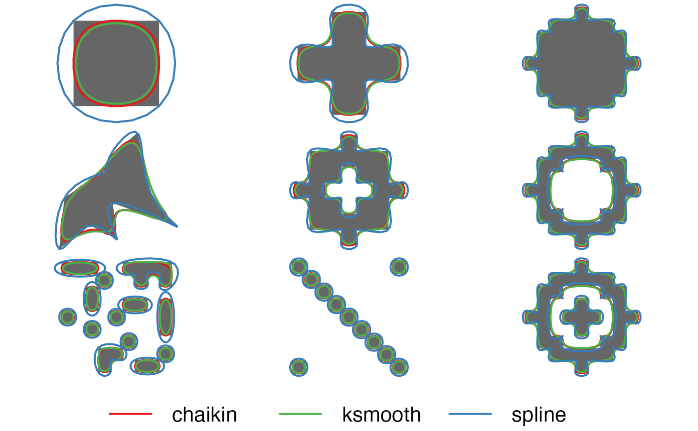

Smooth out the jagged or sharp corners of spatial lines or polygons to make them appear more aesthetically pleasing and natural.
smooth(x, method = c("chaikin", "ksmooth", "spline", "densify"), ...)
Arguments
| x | spatial features; lines or polygons from either the |
|---|---|
| method | character; specifies the type of smoothing method to use.
Possible methods are: |
| ... | additional arguments specifying the amount of smoothing, passed on to the specific smoothing function, see Details below. |
Value
A smoothed polygon or line in the same format as the input data.
Details
Specifying a method calls one of the following underlying smoothing functions. Each smoothing method has one or more parameters that specify the extent of smoothing. Note that for multiple features, or multipart features, these parameters apply to each individual, singlepart feature.
smooth_chaikin(): Chaikin's corner cutting algorithm smooths a curve by iteratively replacing every point by two new points: one 1/4 of the way to the next point and one 1/4 of the way to the previous point. Smoothing parameters:refinements: number of corner cutting iterations to apply.
smooth_ksmooth(): kernel smoothing via thestats::ksmooth()function. This method first callssmooth_densify()to densify the feature, then applies Gaussian kernel regression to smooth the resulting points. Smoothing parameters:smoothness: a positive number controlling the smoothness and level of generalization. At the default value of 1, the bandwidth is chosen as the mean distance between adjacent vertices. Values greater than 1 increase the bandwidth, yielding more highly smoothed and generalized features, and values less than 1 decrease the bandwidth, yielding less smoothed and generalized features.bandwidth: the bandwidth of the Guassian kernel. If this argument is supplied, thensmoothnessis ignored and an optimal bandwidth is not estimated.n: number of times to split each line segment in the densification step. Ignored ifmax_distanceis specified.max_distance: the maximum distance between vertices in the resulting features for the densification step. This is the Euclidean distance and not the great circle distance.
smooth_spline(): spline interpolation via thestats::spline()function. This method interpolates between existing vertices and can be used when the resulting smoothed feature should pass through the vertices of the input feature. Smoothing parameters:vertex_factor: the proportional increase in the number of vertices in the smooth feature. For example, if the original feature has 100 vertices, a value of 2.5 will yield a new, smoothed feature with 250 vertices. Ignored ifnis specified.n: number of vertices in each smoothed feature.
smooth_densify(): densification of vertices for lines and polygons. This is not a true smoothing algorithm, rather new vertices are added to each line segment via linear interpolation. Densification parameters:n: number of times to split each line segment. Ignored ifmax_distanceis specified.max_distance: the maximum distance between vertices in the resulting feature. This is the Euclidean distance and not the great circle distance.
References
See specific smoothing function help pages for references.
See also
Examples
library(sf) # compare different smoothing methods # polygons par(mar = c(0, 0, 0, 0), oma = c(4, 0, 0, 0), mfrow = c(3, 3)) p_smooth_chaikin <- smooth(jagged_polygons, method = "chaikin") p_smooth_ksmooth <- smooth(jagged_polygons, method = "ksmooth") p_smooth_spline <- smooth(jagged_polygons, method = "spline") for (i in 1:nrow(jagged_polygons)) { plot(st_geometry(p_smooth_spline[i, ]), col = NA, border = NA) plot(st_geometry(jagged_polygons[i, ]), col = "grey40", border = NA, add = TRUE) plot(st_geometry(p_smooth_chaikin[i, ]), col = NA, border = "#E41A1C", lwd = 2, add = TRUE) plot(st_geometry(p_smooth_ksmooth[i, ]), col = NA, border = "#4DAF4A", lwd = 2, add = TRUE) plot(st_geometry(p_smooth_spline[i, ]), col = NA, border = "#377EB8", lwd = 2, add = TRUE) }par(fig = c(0, 1, 0, 1), oma = c(0, 0, 0, 0), new = TRUE) plot(0, 0, type = "n", bty = "n", xaxt = "n", yaxt = "n", axes = FALSE)legend("bottom", legend = c("chaikin", "ksmooth", "spline"), col = c("#E41A1C", "#4DAF4A", "#377EB8"), lwd = 2, cex = 2, box.lwd = 0, inset = 0, horiz = TRUE)# lines par(mar = c(0, 0, 0, 0), oma = c(4, 0, 0, 0), mfrow = c(3, 3)) l_smooth_chaikin <- smooth(jagged_lines, method = "chaikin") l_smooth_ksmooth <- smooth(jagged_lines, method = "ksmooth") l_smooth_spline <- smooth(jagged_lines, method = "spline") for (i in 1:nrow(jagged_lines)) { plot(st_geometry(l_smooth_spline[i, ]), col = NA) plot(st_geometry(jagged_lines[i, ]), col = "grey20", lwd = 3, add = TRUE) plot(st_geometry(l_smooth_chaikin[i, ]), col = "#E41A1C", lwd = 2, lty = 2, add = TRUE) plot(st_geometry(l_smooth_ksmooth[i, ]), col = "#4DAF4A", lwd = 2, lty = 2, add = TRUE) plot(st_geometry(l_smooth_spline[i, ]), col = "#377EB8", lwd = 2, lty = 2, add = TRUE) }par(fig = c(0, 1, 0, 1), oma = c(0, 0, 0, 0), new = TRUE) plot(0, 0, type = "n", bty = "n", xaxt = "n", yaxt = "n", axes = FALSE)legend("bottom", legend = c("chaikin", "smooth", "spline"), col = c("#E41A1C", "#4DAF4A", "#377EB8"), lwd = 2, cex = 2, box.lwd = 0, inset = 0, horiz = TRUE)